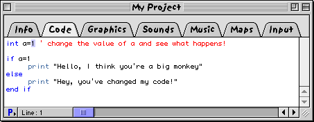
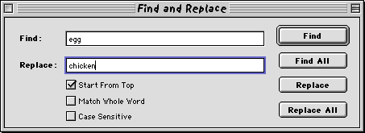
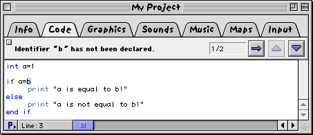

|
||||
Chapter 3.2 |
||||
The Code
|
||||
Code Section
This section is where you "code" your game. Coding is the process of writing instructions to control your game. Coding in TNT Basic isn't hard, see the Learn To Code tutorials in the TNT Basic help system for more information!
TNT Basic Code Editor
|  |
|
Hieroglyph Code Section
|
The TNT Basic code editor is where all your coding takes place. As you type, your code is colour coded by a technique called syntax highlighting.
Words highlighted in blue represent control flow statements.
Words in granite represent language commands.
Finally words in red represent comments. Comments are ignored by TNT Basic and they allow you to make notes throughout your code.
The code editor eases your navigation through your project as it gets large by providing you with a procedures popup (you can learn more about procedures in the TNT Basic help system). The procedures popup allows you to quickly locate any procedure by name, meaning you can zip around your code quickly, without requiring you to remember exactly where everything is.
The code editor also features handy features like a powerful find and replace, line number read out, indentation commands and remming commands.
Indentation Commands
There are two commands in the Edit menu when using the code editor: Indent Left and Indent Right. These commands move the selected lines left or right by one indentation level.
By convention, indenting is used to make code more readable. Generally, all statements inside a control statement are indented. For example:
if a=3
print "This line is indented in the code editor"
end if
You can indent a line by placing tabs at the beginning, you do not generally use spaces to indent lines. The indentation commands are make things easier, especially when used via their shortcut keys cmd-[ and cmd-].
You do not have to indent code, it is merely done to make things easier to read.
Remming Commands
The remming commands provide an easy way to rem or un-rem a block of text. When text is remmed it is ignored by TNT Basic. Rems appear in red in the code editor. Choose "Rem Selection" and "Unrem Selection" to rem and un-rem selected rows of text.
Find and Replace
The code editor's find and replace feature is accessed by choosing "Find" from the "Search" menu. You are then presented with a dialog like the following:
|  |
|
Hieroglyph Code Find and Replace Window
|
The options for the find dialog are as follows:
Start From Top
When checked, this begins the search for the find string from the top of the code, otherwise it begins the search from the current cursor position downwards.Match Whole Word
When checked, only entire words are that match the find string are found; if your find string is inside another word then it doesn't count.For example: if searching for the word "ring" with "Match Whole Word" off, results would be found in the words "bring", "colouring" and "ringing". If "Match Whole Word" is on, only the separated word "ring" will be found.
Case Sensitive
If this is set, then a lower case letter and upper case letter are seen as different, if not set, they are seen as equal.
The buttons in the find window operate as follows:
Find
Finds the next occurance of the find string by moving down the document.Find All
Finds all occurances of the find string and displays them at the top of the window.Replace
Replaces the next occurance of the find string with the replace string.Replace All
Replaces all occurances of the find string with the replace string.
These commands can also be accessed from the "Search" menu directly. You will also find the following commands in the search menu:
Enter Find String
Takes the currently selected text and places it into the find window's "Find" string boxEnter Replace String
Takes the currently selected text and places it into the find window's "replace" string box.Replace Selection
If the selected text is equal to the find string, replace it with the replace string.Find Definition
Find the definition of the selected TNT Basic command in the TNT Basic help centre. If the selected text is not a command then search the help centre for any articles referring to the text.For example: hilighting the word "sprite" and selecting "Find Definition" will take you to the command definition of the TNT Basic "sprite" command. Selecting the words "moving sprites" and choosing "Find Definition" will find all articles relating to moving sprites.
The Note Bar
|  |
|
Hieroglyph Code Section With Errors Displayed
|
The note bar is displayed at the top of the code section when you try to run a project that has errors in the code. The errors in the code are all listed in the note bar and you can flick through them easily and correct them as you go.
You can click the up and down arrows to move between the errors. (You can also use cmd-opt-up/down as short cut keys). To close the note bar click the close box in the top left corner.
If you select find all from the search menu, all the search results are collated together and placed in the note bar. You can then quickly review the search results.